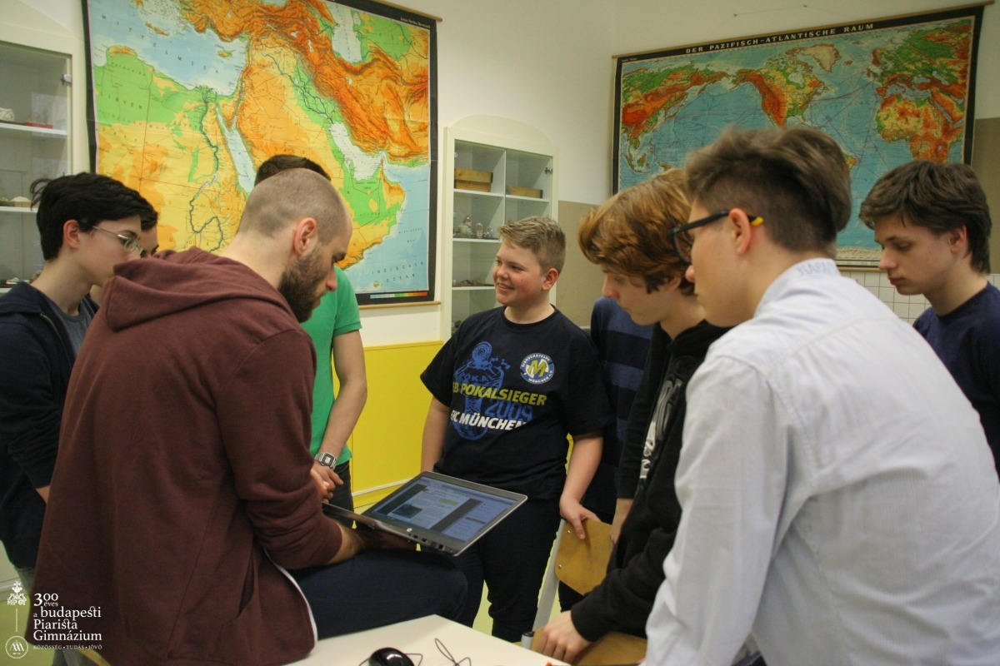
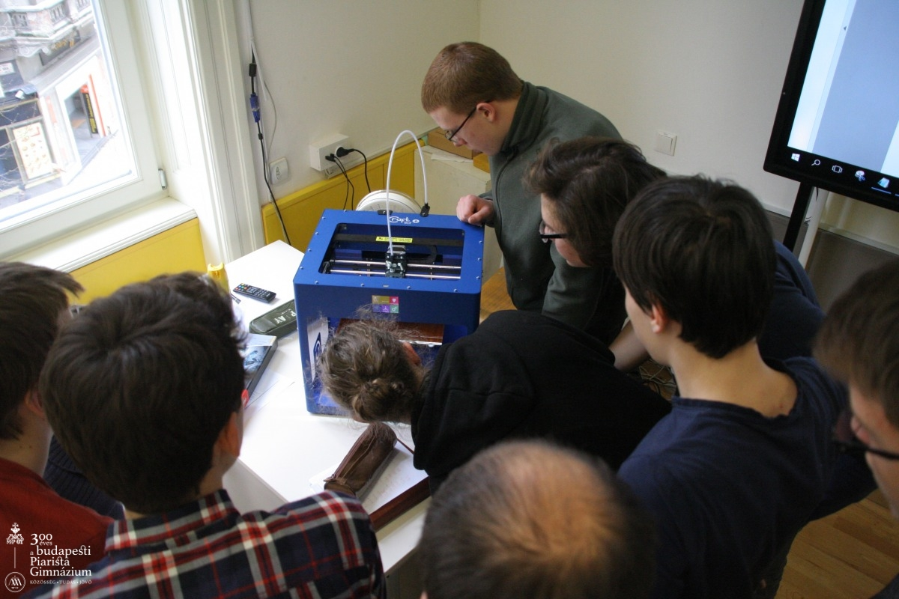
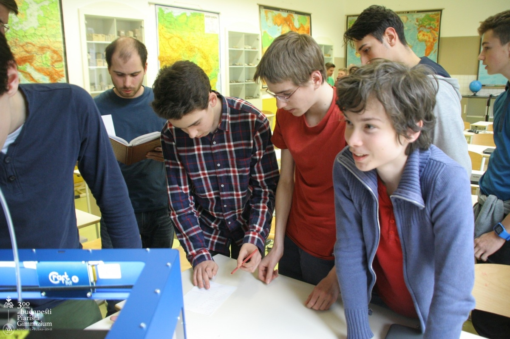
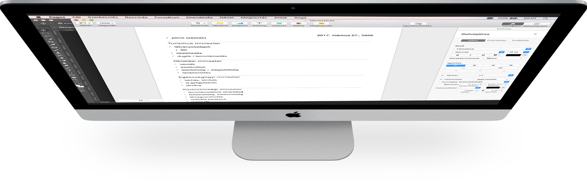

3D Társasjáték Project
Budapesti Piarista Gimnázium
Megkaptuk a feladatot...
Két csoportra osztódtunk
Gamification
játék megtervezése
nyomtatandó termékek megnevezése
Nyomtatósok
nyomtató képességeinek felmérése
programok használatának megtanulása
nyomtatás
Ismerkedés...



Összevisszaság
